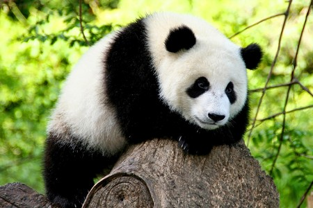
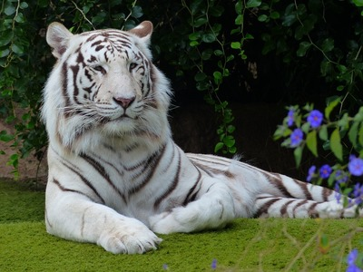
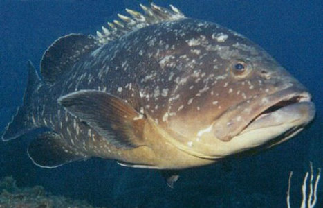
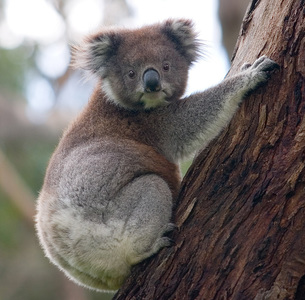
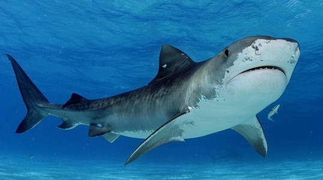
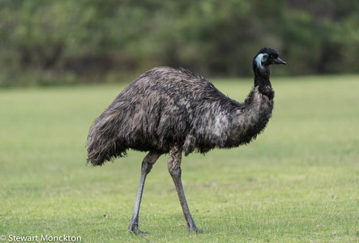

ASIA Y OCEANIA
ASIA
Panda Gigante

El panda, oso panda o panda gigante es una especie de mamífero del orden de los carnívoros y aunque hay una gran controversia al respecto, los últimos estudios de su ADN lo engloban entre los miembros de la familia de los osos, siendo el oso de anteojos su pariente más cercano, si bien este pertenece a la subfamilia de los tremarctinos. Por otro lado, el panda rojo pertenece a una familia propia e independiente. La especie está muy localizada. Nativo de China central, el panda gigante habita en regiones montañosas
Mas informaciónTigre de Bengala

El tigre de Bengala, también conocido como tigre de Bengala real o tigre indio es una subespecie de tigre que habita en la India, Nepal, Bangladés, Bután, Birmania y Tíbet. Es la subespecie más numerosa y conocida de tigre, y se encuentra en una gran variedad de hábitats, incluyendo sabanas y bosques tropicales y subtropicales. Su piel es generalmente de color naranja o leonado. Existe una mutación genética que produce que la piel naranja del tigre sea sustituida por el color blanco; a estos tigres se les conoce como tigres blancos. Una mutación aún más rara (de la que existen menos de cien ejemplares, todos en cautiverio), se conoce como tigre dorado. El tigre es un animal nacional en la India y Bangladés.
Mas informaciónMero Gigante

El mero gigante, es el pez óseo más grande entre los que habitan en los arrecifes
Mas informaciónOCEANIA
Koala

El koala es una especie de marsupial diprotodonto de la familia Phascolarctidae, endémico de Australia. Es el único representante existente de la familia Phascolarctidae y sus parientes vivos más cercanos son los wombats. Vive en las zonas costeras de las regiones este y sur australianas, en los estados de Queensland, Nueva Gales del Sur, Victoria y Australia Meridional. Es fácilmente reconocible por su cuerpo robusto sin cola, cabeza grande con orejas redondas y peludas y nariz grande en forma de cuchara. Mide entre 60 y 85 cm y pesan de 4 a 15 kg. El color de su pelaje va del gris plata al marrón chocolate. Las poblaciones septentrionales suelen ser de menor tamaño y de un color más claro que las del sur, por lo que se cree que puedan ser una subespecie separada, aunque esta posibilidad está en discusión. Viven en zonas abiertas de bosques de eucaliptos, cuyas hojas constituyen la mayor parte de su dieta.
Mas informaciónTiburón Toro

El tiburón toro, tiburón tigre de arena o tiburón damisela, que no debe ser confundido con el que se conoce en inglés como "Bull Shark", que en español es conocido como tiburón sarda y con quien ni siquiera comparte orden taxonómico es una especie de elasmobranquio lamniforme de la familia Odontaspididae presente en todo el mundo, océanos Atlántico, Índico y Pacífico. Es también conocido como tiburón dientes cerrados o enfermera gris. Generalmente permanecen dentro del kilómetro de su sitio de agregación, y gusta de estar en el piso oceánico.
Mas informaciónEmú

Dromaius es un género de aves Casuariiformes de la familia Dromaiidae conocidas coloquialmente como emú. Son aves grandes, no voladoras. Su hábitat natural se encuentra en el continente de Oceanía; en la actualidad solo sobrevive una especie, emú común, que es la segunda ave de mayor tamaño, después del avestruz.
Mas información